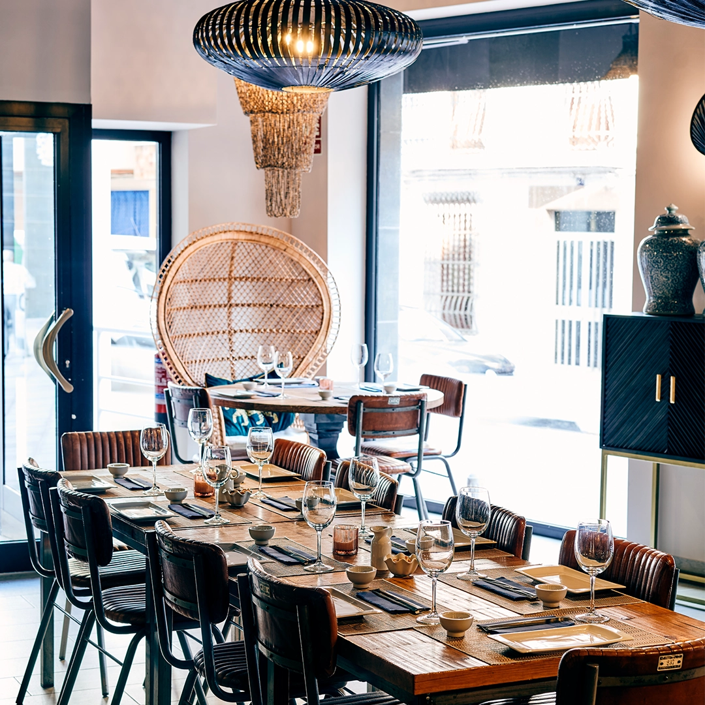
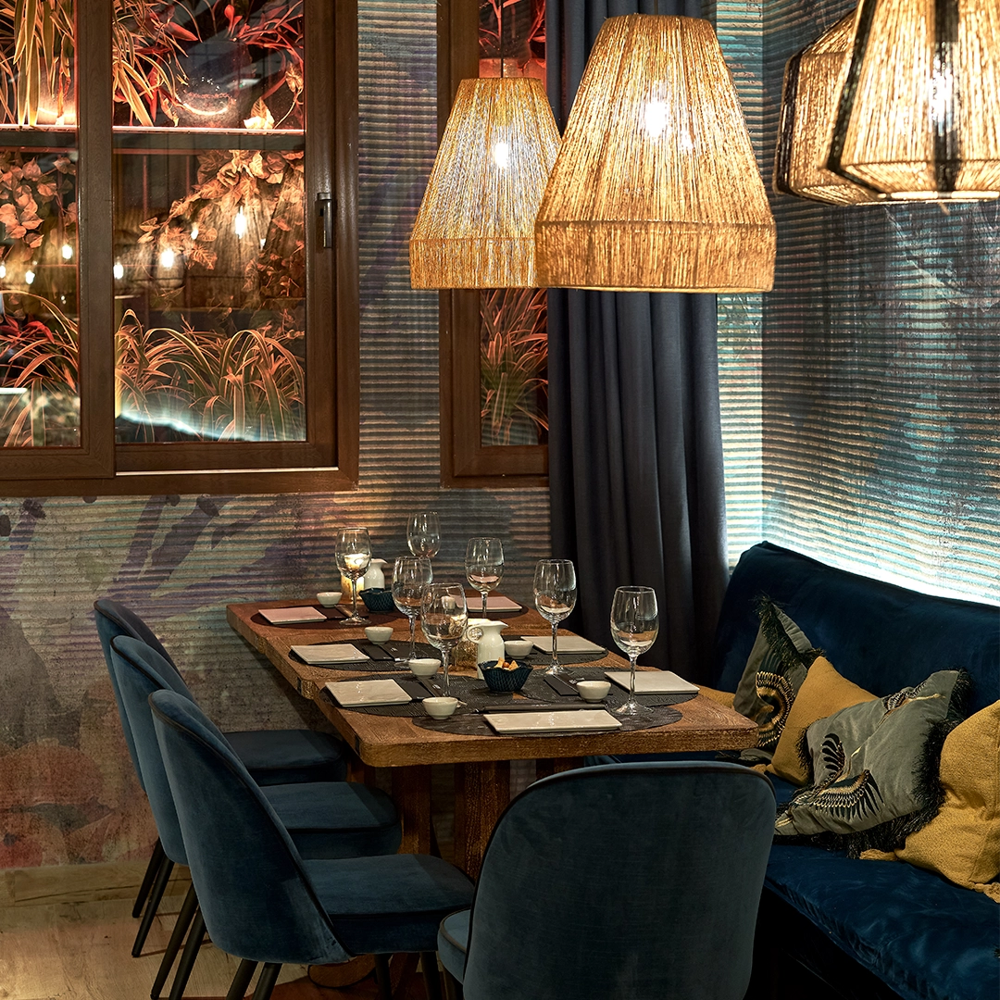
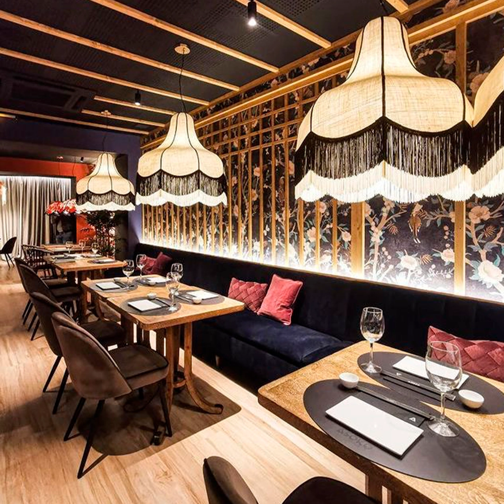
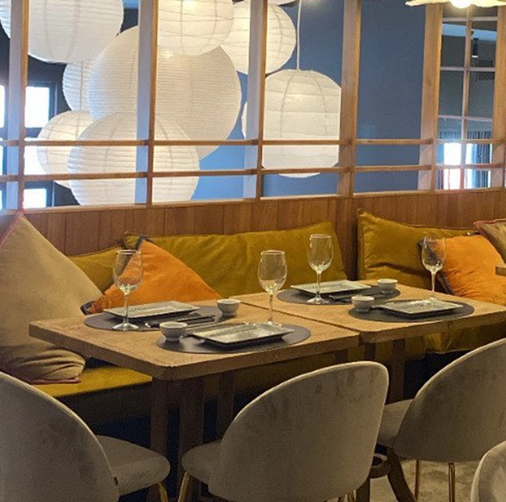
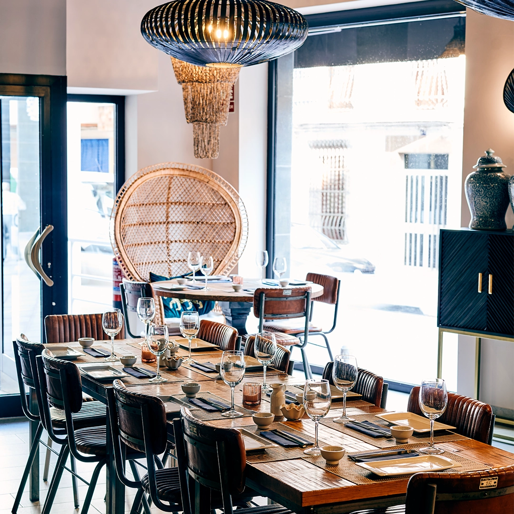
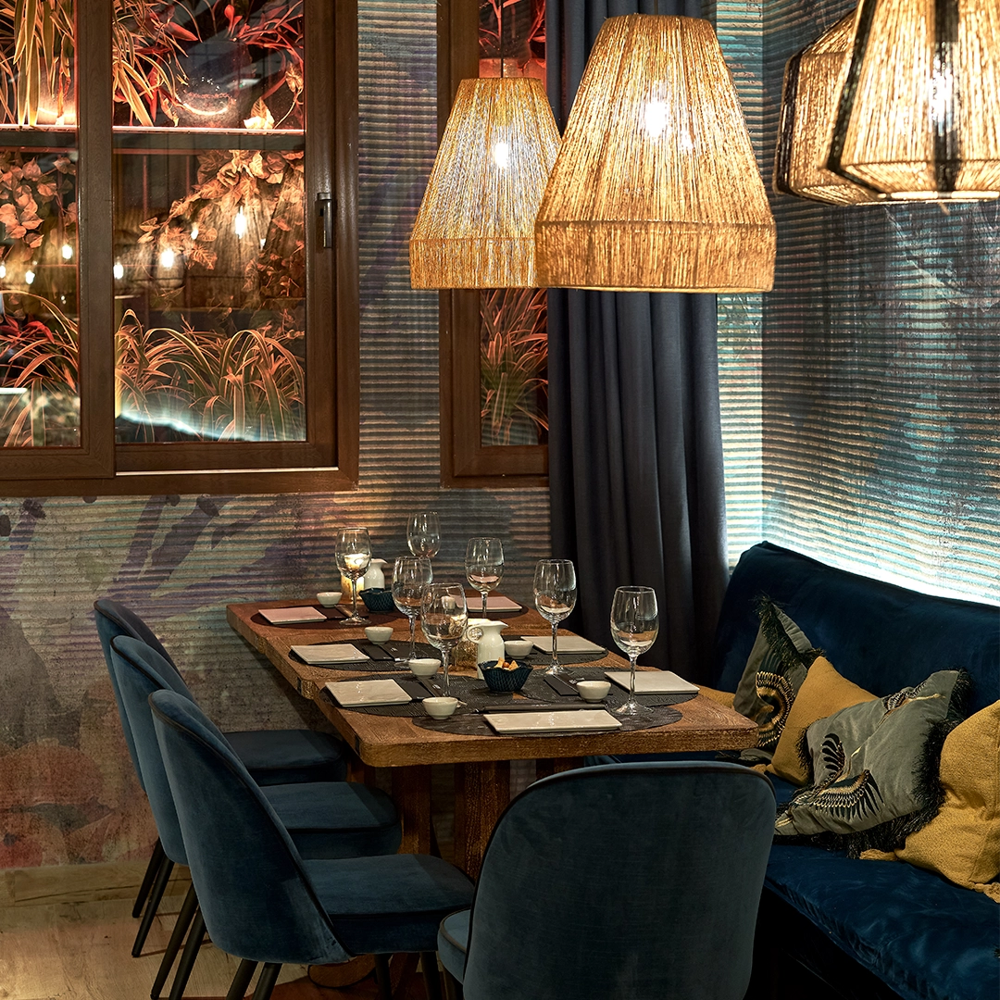
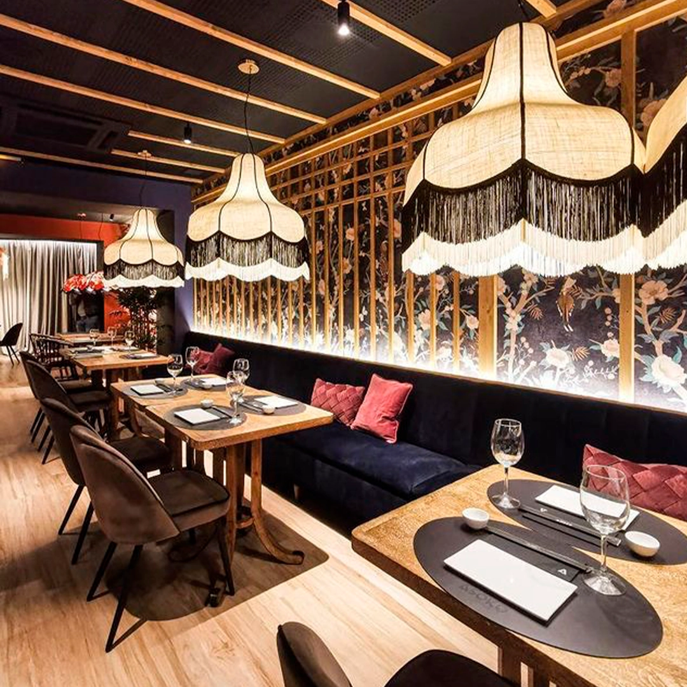
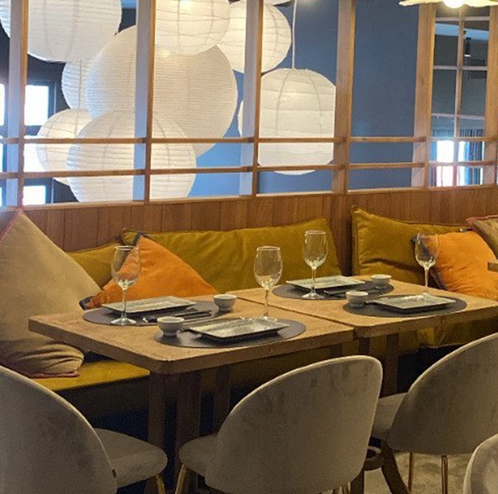

Con amigos, en pareja o en familia… Asoko, restaurante japonés, te ofrece los mejores y más variados platos de la cocina japonesa.
Nuestra carta hace un claro guiño a las técnicas más vanguardistas en sus originales y deliciosos platos, con una cuidada selección de la materia prima en todos sus productos.
 







Catering gourmet especializado en sushi ideal para todo tipo de eventos privados, de empresas o eventos
corporativos en Valencia
¡Tu catering soñado de la mano de ASOKO EVENTS!
Presupuesto personalizado y disponibilidad de carta completa.
Solicita tu presupuesto. Escríbenos a events@asoko.es